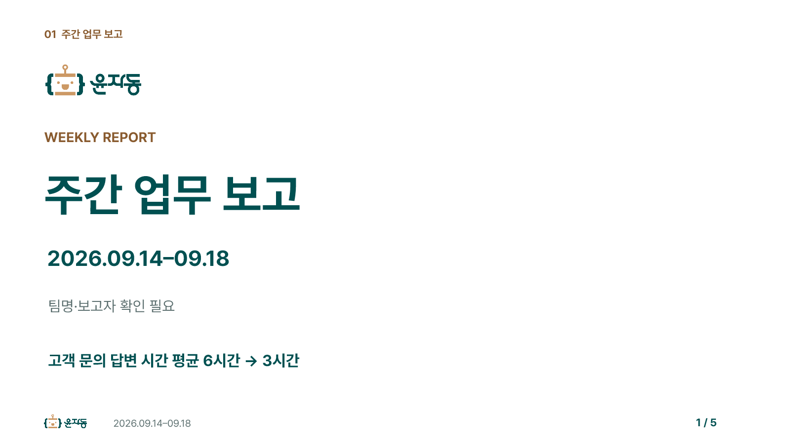
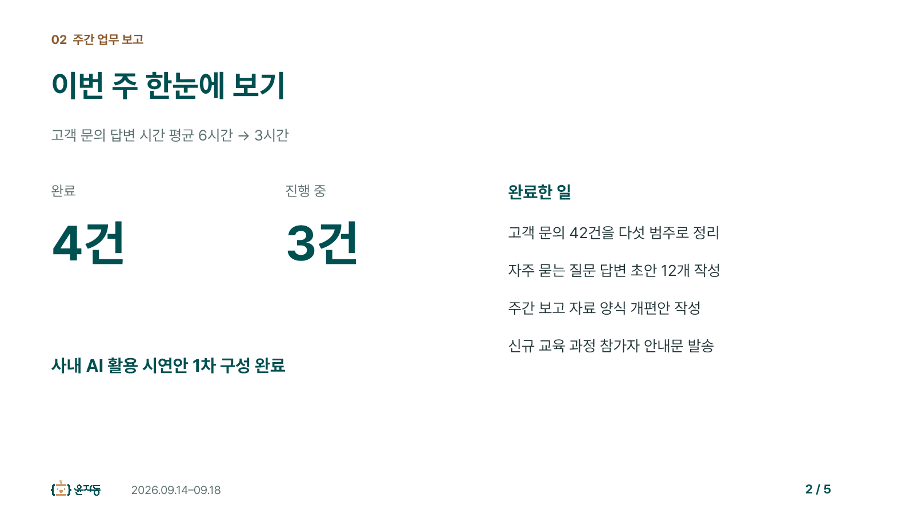
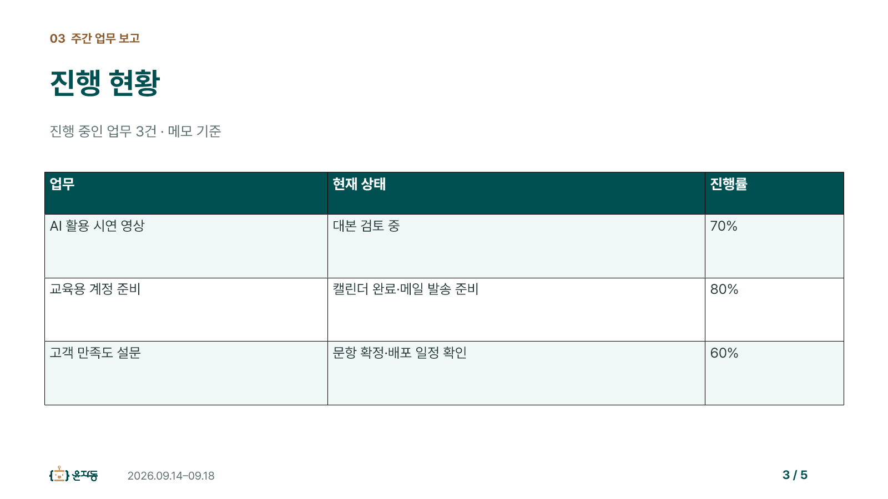
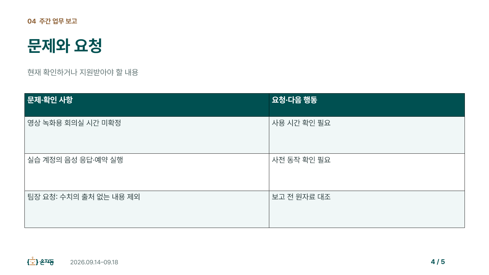
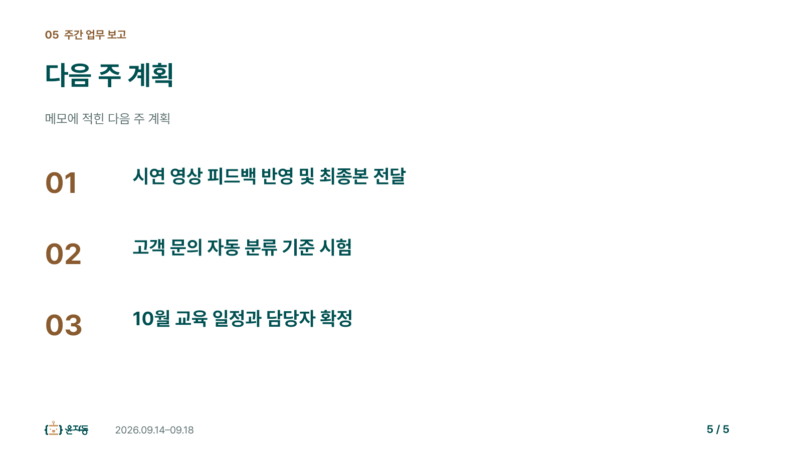
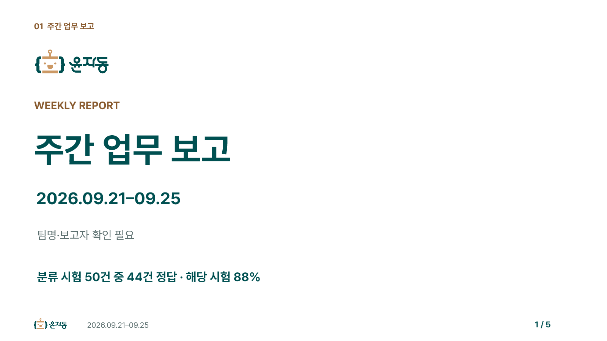
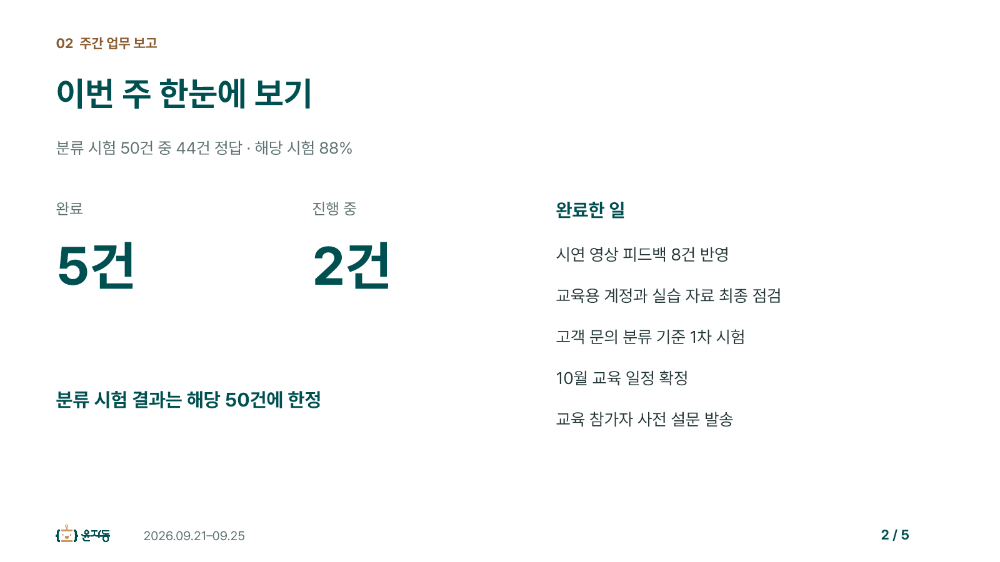
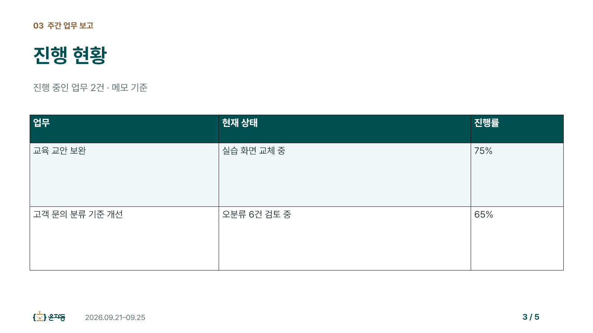
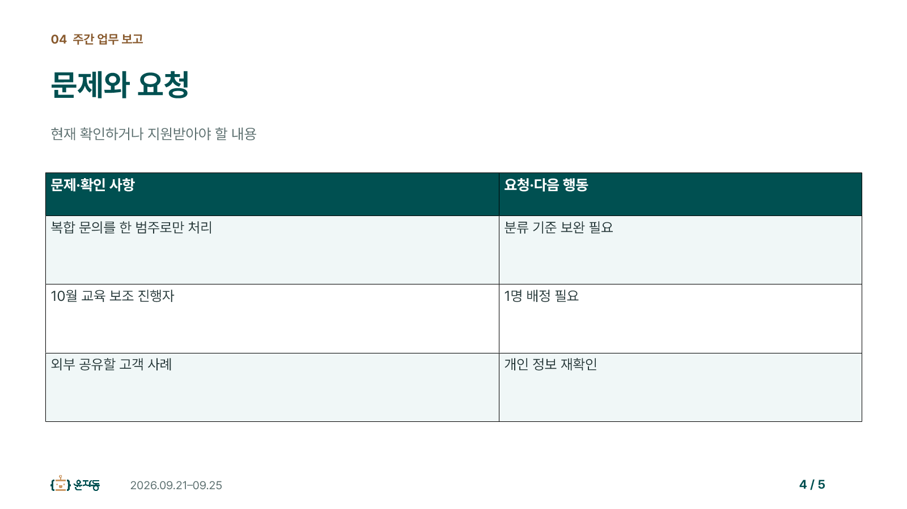
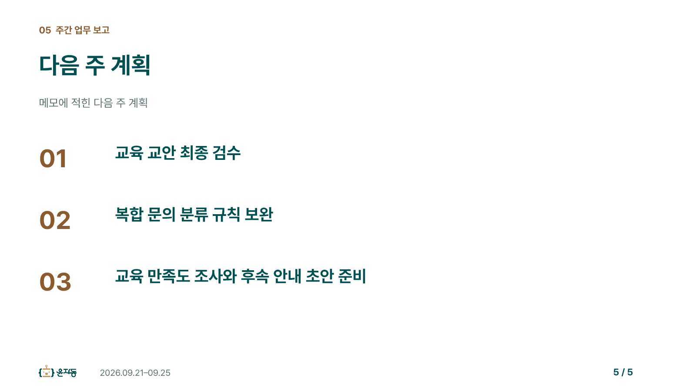

교육용 가상 메모로 사전에 제작한 예시입니다. 수강생의 실제 생성 결과와 구분합니다.
새 보고양식.pptx 받기 · 결과 대조 예시와 완성 PPT · PPT 실습 교재










윤자동 · Pretendard · 16:9
교육용 가상 메모로 사전에 제작한 예시입니다. 수강생의 실제 생성 결과와 구분합니다.
새 보고양식.pptx 받기 · 결과 대조 예시와 완성 PPT · PPT 실습 교재









